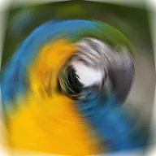

اسپن بلر

لیئر کو کسی نقطے کے گرد دائرے میں بلر کرتا ہے، جیسے وہ گھوم رہا ہو۔
سیٹنگز
| سیٹنگ | قسم | رینج | ڈیفالٹ |
|---|---|---|---|
| سینٹر | پوائنٹ (X, Y) | -1 سے 2 تک | 0.5, 0.5 |
| اینگل | زاویہ | 0° سے 360° تک | 5° |

لیئر کو کسی نقطے کے گرد دائرے میں بلر کرتا ہے، جیسے وہ گھوم رہا ہو۔
| سیٹنگ | قسم | رینج | ڈیفالٹ |
|---|---|---|---|
| سینٹر | پوائنٹ (X, Y) | -1 سے 2 تک | 0.5, 0.5 |
| اینگل | زاویہ | 0° سے 360° تک | 5° |